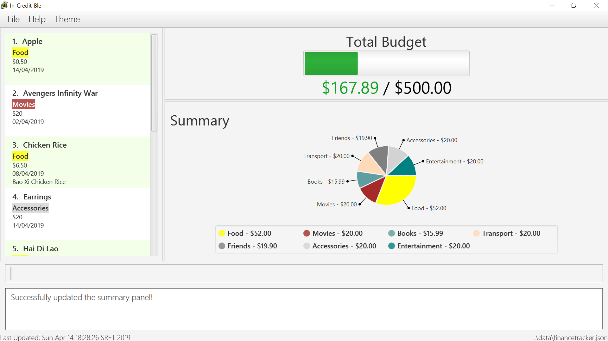

By: Team W17-3 Since: January 2019 Licence: MIT
- 1. Introduction
- 2. Quick Start
- 3. Features
- 3.1. Viewing help :
help - 3.2. Set a budget:
set - 3.3. Adding an expense :
spend - 3.4. Increasing budget:
increase - 3.5. Allocate budgeting based on categories:
allocate - 3.6. Listing all entries :
list - 3.7. Showing summary of records :
summary - 3.8. Editing description of entries:
description - 3.9. Editing entries :
edit - 3.10. Deleting an entry:
delete - 3.11. Listing entered commands:
history - 3.12. Undoing previous command :
undo - 3.13. Redoing the previously undone command :
redo - 3.14. Clearing all entries :
clear - 3.15. Exiting the program :
exit - 3.16. Saving the data
- 3.17. Establish saving patterns based on record and derive projected savings/expenses in a time span
[coming in v2.0] - 3.18. Suggestions on how to save/Links to investment guide
[coming in v2.0] - 3.19. Separate expenditures based on methods of payment (Cash, Visa, Paylah)
[coming in v2.0]
- 3.1. Viewing help :
- 4. FAQ
- 5. Command Summary
- 6. Glossary
1. Introduction
In-Credit-Ble will be your "one-stop shop" in managing and tracking your personal finances. Our user-friendly interface will make it easy for you to stick to your budget and be more aware of your spending habits. If you are a fast typer, or prefer to type over using your mouse and like to get things done efficiently, then this is the product just for you! In-Credit-Ble is designed for those who prefer to work with a Command Line Interface (CLI).
2. Quick Start
-
Ensure you have Java version
9or later installed in your Computer. -
Download the latest
increditble.jarhere. -
Copy the file to the folder you want to use as the home folder for your Address Book.
-
Double-click the file to start the app. The GUI should appear in a few seconds.
 -
Type the command in the command box and press Enter to execute it.
e.g. typinghelpand pressing Enter will open the help window. -
Some example commands you can try:
-
allocate: allocate budget to a certain category -
help: view command list and how to use them -
set: set a budget
-
-
Refer to Section 3, “Features” for details of each command.
3. Features
Command Format
-
Words in
UPPER_CASEare the parameters to be supplied by the user e.g. inset a/AMOUNT,AMOUNTis a parameter which can be used asset 200.00. -
Items in square brackets are optional e.g
search KEYWORD [MORE_KEYWORDS]can be used assearch Johnor assearch John Williams. -
Items with
… after them can be used multiple times including zero times.
3.1. Viewing help : help
Lists the commands that a user can enter to navigate the software
Format: help
3.2. Set a budget: set
Sets a budget for the month/week
Format: set a/AMOUNT
Examples:
-
set a/500 -
set a/500.50
3.3. Adding an expense : spend
Adds an expenditure to a given category in the expense tracker
Format: spend a/AMOUNT c/CATEGORY
3.4. Increasing budget: increase
Increases the budget limit for the month/week by the specified amount.
Format: increase a/AMOUNT
Examples:
-
increase a/10.10 -
increase 100
3.5. Allocate budgeting based on categories: allocate
To set the budget amount for a particular category
Format: allocate a/AMOUNT c/CATEGORY
Examples:
-
allocate a/50 c/Dining
Allocates $50 of month/week’s budget toDiningcategory -
allocate a/30.50 c/Shopping
Allocates $30.50 of month/week’s budget toShoppingcategory
3.6. Listing all entries : list
List all entries by user
Format: list
3.7. Showing summary of records : summary
Shows the summary of user’s previous expenditures, with statistics on how one’s spending habits are like in the different categories. It also displays the remaining budget amount for each category.
Format: summary
3.8. Editing description of entries: description
Edits the description of an existing entry in records.
Format: description INDEX [d/DESCRIPTION]
Examples:
-
description 1 d/Father’s birthday present
Changes the description of entry at index 1 to "Father’s birthday present" -
description 1 d/
Removes the description of entry at index 1
3.9. Editing entries : edit
Edits an existing entry in the record.
Format: edit INDEX [a/AMOUNT] [c/CATEGORY]
Examples:
-
search Transport Wednesday
Returns an entry that has Transport as category and is entered on Wednesday === Locating entry based on category/date:search
Search for an entry using a category name or a date/day/week/month/year as keyword.
Format: search KEYWORD [KEYWORD]
Examples:
-
search Transport Wednesday
Returns an entry that has Transport as category and is entered on Wednesday
3.10. Deleting an entry: delete
Deletes an entry in the record.
Format: delete INDEX
|
|
Examples:
-
delete 2
Deletes the entry at index 2
3.11. Listing entered commands: history
Lists all the commands user has entered in reverse chronological order
Format: history
3.12. Undoing previous command : undo
Restores the address book to the state before the previous undoable command was executed.
Format: undo
|
Undoable commands: those commands that modify the address book’s content ( |
Examples:
-
delete 1
list
undo(reverses thedelete 1command) -
select 1
list
undo
Theundocommand fails as there are no undoable commands executed previously. -
delete 1
clear
undo(reverses theclearcommand)
undo(reverses thedelete 1command)
3.13. Redoing the previously undone command : redo
Reverses the most recent undo command.
Format: redo
Examples:
-
delete 1
undo(reverses thedelete 1command)
redo(reapplies thedelete 1command) -
delete 1
redo
Theredocommand fails as there are noundocommands executed previously. -
delete 1
clear
undo(reverses theclearcommand)
undo(reverses thedelete 1command)
redo(reapplies thedelete 1command)
redo(reapplies theclearcommand)
3.14. Clearing all entries : clear
Clears all entries from the address book.
Format: clear
3.15. Exiting the program : exit
Exits the program.
Format: exit
3.16. Saving the data
The finance record and allocated budget will be saved in the hard disk automatically after any command that changes the data. There is no need to save manually
3.17. Establish saving patterns based on record and derive projected savings/expenses in a time span [coming in v2.0]
The finance record for each month will be archived at the end of the month. This information will be used to derive the projected savings/expenses based on the typical spending pattern of the user.
3.18. Suggestions on how to save/Links to investment guide [coming in v2.0]
The user will be able to list categories of financial articles that they are interested in (e.g. investment, stock market). Based on these categories, the application will use Google API to search for related articles for the user to view.
3.19. Separate expenditures based on methods of payment (Cash, Visa, Paylah) [coming in v2.0]
The application will link up with secure methods of payment such as payLah, Visa/MasterCard, Amex or Paypal to allow transactions between users. By paying through this application, the transactions will be automatically updated on the records.
4. FAQ
Q: How do I transfer my data to another Computer?
A: Install the app in the other computer and overwrite the empty data file it creates with the file that contains the data of your previous In-Credit-Ble folder.
Q: Will the application support different currency? A: At the current version, the application is unable to support transactions record in different currency. User will need to calculate and input based on the local currency. This will be rectified in the subsequent version of our application.
5. Command Summary
-
Help:
help -
Set Budget:
set a/AMOUNT
e.g.set 500 -
Add expense:
spend a/AMOUNT c/CATEGORY
e.g.spend 5.1 food -
Increase budget:
increase a/AMOUNT
e.g.increase 10 -
Allocate budgeting based on categories:
allocate a/AMOUNT c/CATEGORY'
e.g. `allocate 100 transport -
Listing all entries:
list -
Showing summary of record:
summary -
Editing an entry:
edit INDEX a/AMOUNT [c/CATEGORY]
e.g.edit 1 4.55 transport -
Locating entry based on category/date:
search KEYWORD [MORE_KEYWORDS] -
Deleting an entry:
delete INDEX
e.g.delete 1 -
Listing entered commands:
history -
Undoing previous command:
undo -
Redoing previously undone command:
redo -
Clearing all entries:
clear -
Exiting the program:
exit
6. Glossary
-
amount
The amount of money for expenditure and budget -
entry
The listed item/activity tracked by the application. It generally consists of the amount, along with a category tag (if specified) -
record
The list of all entries stored in the application